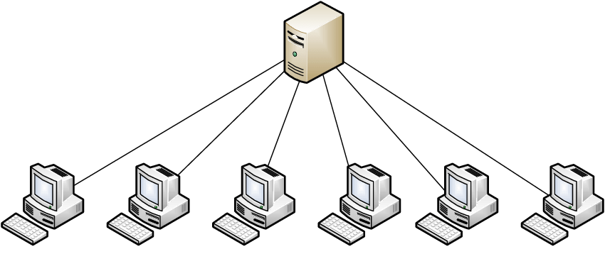

1. เครือข่ายแบบไคลเอนต์/เซิร์ฟเวอร์ (Client-Server)
ไคลเอนต์ (Client) คือ เครื่องคอมพิวเตอร์ที่ไปร้องขอบริการและรับบริการอย่างใดอย่างหนึ่งจากเซิร์ฟเวอร์ เครื่องเซิฟเวอร์(Server) คือ เครื่องคอมพิวเตอร์ที่ทำหน้าที่ให้บริการอย่างใดอย่างหนึ่งหรือหลายอย่าง โดยให้บริการทรัพยากรเครื่องให้กับเครื่องไคลเอนต์ เช่น บริการไฟล์(File Server) คือการที่เครื่องเซิร์ฟเวอร์ให้แฟ้มข้อมูลแก่เครื่องไคลเอนต์ เป็นต้น
เป็นรูปแบบที่นิยมมากที่สุด มีเครื่องคอมพิวเตอร์หลักที่ทรงพลังทำหน้าที่เป็น "ผู้ให้บริการ" (Server) คอยจัดเก็บข้อมูลและให้บริการต่างๆ และมีเครื่องคอมพิวเตอร์อื่นๆ ที่เป็น "ผู้ใช้บริการ" (Client) เข้ามาขอใช้บริการจากเซิร์ฟเวอร์
เครื่องเซิฟเวอร์อาจเป็นเครื่องที่มีสมรรถภาพสูงหรือเครื่องทั่วไปก็ได้ขึ้นอยู่กับการใช้งาน โดยส่วนใหญ่เครื่องเซิฟเวอร์มักถูกออกแบบให้มีสมรรถนะสูง เพื่อรองรับความทนทานต่อการผิดพลาด และมีระบบสำรองต่างๆ
ในปัจจุบันนิยมใช้เซิร์ฟเวอร์หลายๆเครื่องทำงานร่วมกัน (Cloud Computing) เพื่อรองรับผู้ใช้งานจำนวนมากและเพิ่มประสิทธิภาพ เช่น เซิร์ฟเวอร์ของ YouTube หรือ Facebook เป็นต้น
